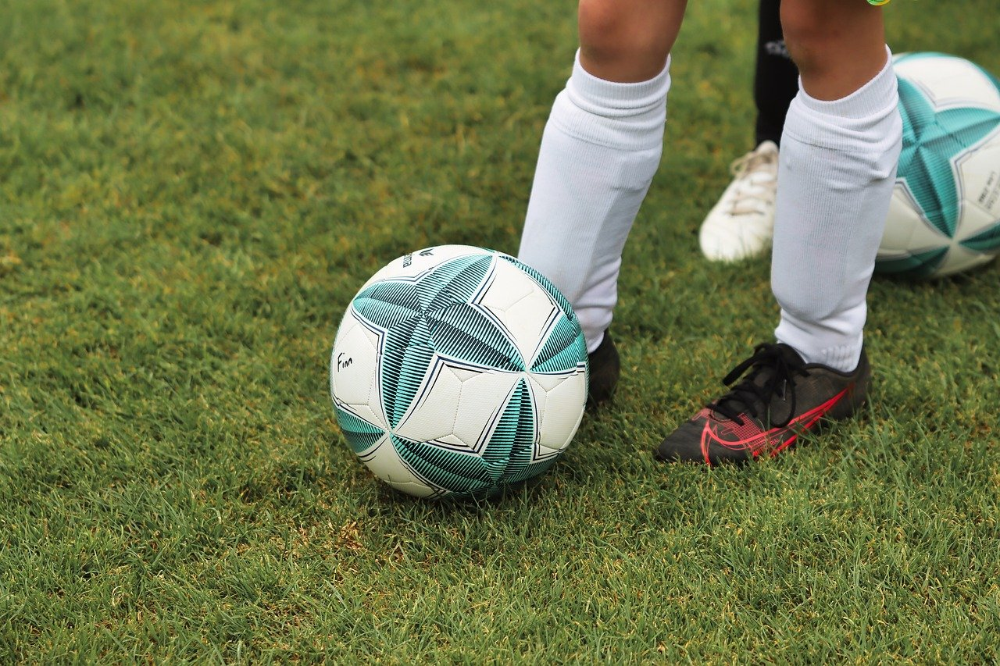
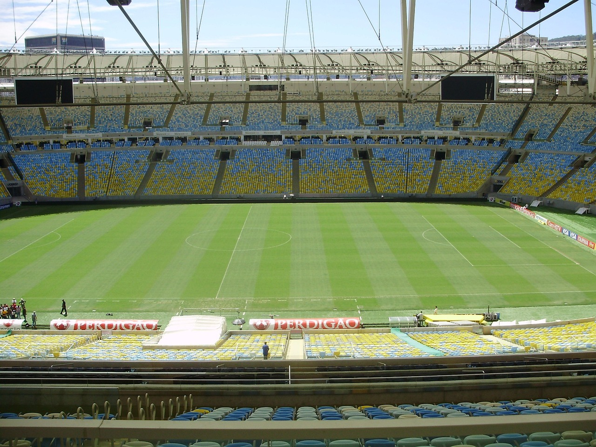

Un dato interesante sobre el fútbol es que la Copa del Mundo de la FIFA es el evento deportivo más visto del planeta, superando incluso a los Juegos Olímpicos en términos de audiencia. La edición de 2018, por ejemplo, alcanzó más de 3.500 millones de personas, con la final entre Francia y Croacia siendo vista por más de 1.000 millones de personas. Además, Brasil es el país con más títulos de la Copa del Mundo, con 5 victorias (1958, 1962, 1970, 1994 y 2002), consolidándose como una potencia histórica en el fútbol mundial.


